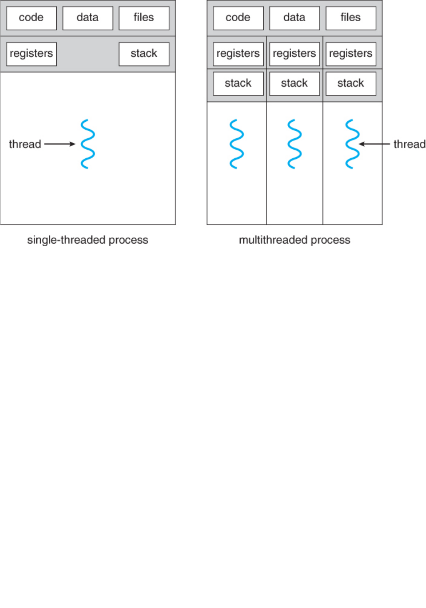

鸟窝 - https://github.com/smallnest/concurrency-programming-via-rust
第一章 Rust并发编程基础：线程
线程（英语：thread）是操作系统能够进行运算和调度的最小单位。大部分情况下，它被包含在
进程之中，是进程中的实际运作单位，所以说程序实际运行的时候是以线程为单位的，一个进程
中可以并发多个线程，每条线程并行执行不同的任务。
线程是独立调度和分派的基本单位，并且同一进程中的多条线程将共享该进程中的全部系统资
源，如虚拟地址空间，文件描述符和信号处理等等。但同一进程中的多个线程有各自的调用栈
（call stack），自己的寄存器上下文（register context），自己的线程本地存储（thread-local
storage）。
一个进程可以有很多线程来处理，每条线程并行执行不同的任务。如果进程要完成的任务很多，
这样需很多线程，也要调用很多核心，在多核或多CPU，或支持Hyper-threading的CPU上使用多
线程程序设计可以提高了程序的执行吞吐率。在单CPU单核的计算机上，使用多线程技术，也可
以把进程中负责I/O处理、人机交互而常被阻塞的部分与密集计算的部分分开来执行，从而提高
CPU的利用率。
线程在以下几个方面与传统的多任务操作系统进程不同：
进程通常是独立的，而线程作为进程的子集存在
进程携带的状态信息比线程多得多，而进程中的多个线程共享进程状态以及内存和其他资源
进程具有单独的地址空间，而线程共享其地址空间
进程仅通过系统提供的进程间通信机制进行交互
同一进程中线程之间的上下文切换通常比进程之间的上下文切换发生得更快
线程与进程的优缺点包括：
线程的资源消耗更少：使用线程，应用程序可以使用比使用多个进程时更少的资源来运行。
线程简化共享和通信：与需要消息传递或共享内存机制来执行进程间通信的进程不同，线程
可以通过它们已经共享的数据，代码和文件进行通信。
线程可以使进程崩溃：由于线程共享相同的地址空间，线程执行的非法操作可能会使整个进
程崩溃;因此，一个行为异常的线程可能会中断应用程序中所有其他线程的处理。

鸟窝 - https://github.com/smallnest/concurrency-programming-via-rust
更有一些编程语言，比如SmallTalk、Ruby、Lua、Python等，还会有协程（英语：coroutine）更
小的调度单位。协程非常类似于线程。但是协程是协作式多任务的，而线程典型是抢占式多任务
的。这意味着协程提供并发性而非并行性。使用抢占式调度的线程也可以实现协程，但是会失去
某些好处。Go语言实现了 Goroutine 的最小调度单元，虽然官方不把它和 coroutine等同，因为
goroutine 实现了独特的调度和执行机制，但是你可以大致把它看成和协程是一类的东西。
还有一类更小的调度单元叫纤程（英语：Fiber），它是一种最轻量化的线程。它是一种用户态线
程（user thread），让应用程序可以独立决定自己的线程要如何运作。操作系统内核不能看见
它，也不会为它进行调度。就像一般的线程，纤程有自己的寻址空间。但是纤程采取合作式多任
务（Cooperative multitasking），而线程采取先占式多任务（Pre-emptive multitasking）。应用
程序可以在一个线程环境中创建多个纤程，然后手动执行它。纤程不会被自动执行，必须要由应
用程序自己指定让它执行，或换到下一个纤程。跟线程相比，纤程较不需要操作系统的支持。实
际上也有人任务纤程也属于协程，因为因为这两个并没有一个严格的定义，或者说含义在不同的
人不同的场景下也有所区别，所以不同的人有不同的理解，比如新近Java 19终于发布的特性，有
人叫它纤程,有人叫它协程。
不管怎么说，Rust实现并发的基本单位是线程，虽然也有一些第三方的库，比如 PingCAP 的黄旭
东实现了 Stackful coroutine库(may)和 coroutine，甚至有一个RFC(RFC 2033: Experimentally add
coroutines to Rust)关注它，但是目前Rust并发实现主流还是使用线程来实现，包括最近实现的
async/await特性，运行时还是以线程和线程池的方式运行。
所以作为Rust并发编程的第一章，我们重点还是介绍线程的使用。

鸟窝 - https://github.com/smallnest/concurrency-programming-via-rust
创建线程
Rust 标准库std::thread crate 提供了线程相关的函数。正如上面所说，一个Rust程序执行的会启动
一个进程，这个进程会包含一个或者多个线程，Rust中的线程是纯操作的系统的线程，拥有自己
的栈和状态。
线程之间的通讯可以通过 channel，就像Go语言推崇的那样，也可以通过一些同步原语。这个我
们会在后面的章节中在做介绍。
pub fn start_one_thread() {
let handle = spawn(|| {
println!("Hello from a thread!");
});
handle.join().unwrap();
}
这段代码我们通过 thread.spawn 在当前线程中启动了一个新的线程，新的线程简单的输出 Hello
from a thread 文本。
如果在 main 函数中调用这个 start_one_thread 函数，控制台中会正常看到这段输出文本，但是
如果注释掉 handle.join.unwrap(); 那一句的话，有可能期望的文本可能不会被输出，原因是当主
程序退出的时候，即使这些新开的线程也会强制退出，所以有时候你需要通过 join 等待这些线程
完成。如果忽略 thread::spawn 返回的 JoinHandle 值，那么这个新建的线程被称之为 detached ，
通过调用 JoinHandle 的 join 方法，调用者就不得不等待线程的完成了。
这段代码我们直接使用 handle.join().unwrap() ,事实上 jopin() 返回的是 Result 类型，如果线
程 panicked了，那么它会返 Err ,否则它会返回 Ok(_) ,这就有意思了，调用者甚至可以得到线程
最后的返回值：
pub fn start_one_thread_result() {
let handle = spawn(|| {
println!("Hello from a thread!");
200
});
match handle.join() {
Ok(v) => println!("thread result: {}", v), // 200
Err(e) => println!("error: {:?}", e),
}
}
thread::
thread::

鸟窝 - https://github.com/smallnest/concurrency-programming-via-rust
下面这段代码是启动了多个线程：
pub fn start_two_threads() {
let handle1 = spawn(|| {
println!("Hello from a thread1!");
});
let handle2 = spawn(|| {
println!("Hello from a thread2!");
});
handle1.join().unwrap();
handle2.join().unwrap();
}
但是如果启动N个线程呢？可以使用一个Vector保存线程的handle:
pub fn start_n_threads() {
const N: isize = 10;
let handles: Vec<_> = (0..N)
.map(|i| {
spawn(move || {
println!("Hello from a thread{}!", i);
})
})
.collect();
// handles.into_iter().for_each(|h| h.join().unwrap());
for handle in handles {
handle.join().unwrap();
}
}
Thread Builder
通过Builder你可以对线程的初始状态进行更多的控制，比如设置线程的名称、栈大大小等等。
thread::
thread::
thread::
鸟窝 - https://github.com/smallnest/concurrency-programming-via-rust
pub fn start_one_thread_by_builder() {
let builder = Builder::new()
.name("foo".into()) // set thread name
.stack_size(32 * 1024); // set stack size
let handler = builder.spawn(|| {
println!("Hello from a thread!");
}).unwrap();
handler.join().unwrap();
}
它提供了 spawn 开启一个线程，同时还提供了 spawn_scoped 开启scoped thread (下面会讲)，一个
实验性的方法 spawn_unchecked ,提供更宽松的声明周期的绑定，调用者要确保引用的对象丢弃之
前线程的 join 一定要被调用，或者使用``static`声明周期，因为是实验性的方法，我们不做过多
介绍，一个简单的例子如下:
#![feature(thread_spawn_unchecked)]
use thread;
let builder = Builder::new();
let x = 1;
let thread_x = &x;
let handler = unsafe {
builder.spawn_unchecked(move || {
println!("x = {}", *thread_x);
}).unwrap()
};
// caller has to ensure `join()` is called, otherwise
// it is possible to access freed memory if `x` gets
// dropped before the thread closure is executed!
handler.join().unwrap();
当前的线程
因为线程是操作系统最小的调度和运算单元，所以一段代码的执行隶属于某个线程。如何获得当
前的线程呢？通过 thread::current() 就可以获得，它会返回一个Thread对象，你可以通过它获
得线程的ID和name:
thread::
std::
thread::
鸟窝 - https://github.com/smallnest/concurrency-programming-via-rust
pub fn current_thread() {
let current_thread = current();
println!("current thread: {:?},{:?}", current_thread.id(), current_thread.name());
let builder = Builder::new()
.name("foo".into()) // set thread name
.stack_size(32 * 1024); // set stack size
let handler = builder.spawn(|| {
let current_thread = current();
println!("child thread: {:?},{:?}", current_thread.id(),
current_thread.name());
}).unwrap();
handler.join().unwrap();
}
甚至，你还可以通过它的 unpark 方法，唤醒这个被阻塞(parked)的线程:
use std::thread;
use std::time::Duration;
let parked_thread = thread::Builder::new()
.spawn(|| {
println!("Parking thread");
thread::park();
println!("Thread unparked");
})
.unwrap();
// Let some time pass for the thread to be spawned.
thread::sleep(Duration::from_millis(10));
println!("Unpark the thread");
parked_thread.thread().unpark();
parked_thread.join().unwrap();
park 和 unpark 用来阻塞和欢迎线程的方法，利用它们可以有效的利用CPU,让暂时不满足条件的
线程暂时不可执行。
并发数和当前线程数
thread::
thread::
thread::
鸟窝 - https://github.com/smallnest/concurrency-programming-via-rust
并发能力是一种资源，一个机器能够提供并发的能力值，这个数值一般等价于计算机拥有的CPU
数（逻辑的核数），但是在虚机和容器的环境下，程序可以使用的CPU核数可能受到限制。
你可以通过 available_parallelism 获取当前的并发数：
use {io, thread};
fn main() -> Result<()> {
let count = available_parallelism()?.get();
assert!(count >= 1_usize);
Ok(())
}
affinity (不支持MacOS) crate 可以提供当前的CPU核数:
let cores: Vec<usize> = (0..get_core_num()).step_by(2).collect();
println!("cores : {:?}", &cores);
更多的，我们使用num_cpus获取CPU的核数（逻辑核）：
use num_cpus;
// count logical cores this process could try to use
let num = get();
如果想获得当前进程的线程数，比如在一些性能监控收集指标的时候，你可以使用num_threads
crate, 实际测试num_threads 不支持windows，所以你可以使用thread-amount代替。
(Rust生态圈就是这样，有很多功能相同或者类似的crate,你可能需要花费时间进行评估和比较,不
像Go生态圈，优选标准库的包，如果没有，生态圈中一般会有一个或者几个高标准的大家公认的
库可以使用。相对而言，Rust生态圈就比较分裂,这一点在选择异步运行时或者网络库的时候感受
相当明显。)
std::
io::
thread::
num_cpus::
鸟窝 - https://github.com/smallnest/concurrency-programming-via-rust
let count = available_parallelism().unwrap().get();
println!("available_parallelism: {}", count);
if let Some(count) = num_threads() {
println!("num_threads: {}", count);
} else {
println!("num_threads: not supported");
}
let count = thread_amount();
println!("thread_amount: {}", count.unwrap());
let count = get();
println!("num_cpus: {}", count);{}", count);
sleep 和 park
有时候我们我们需要将当前的业务暂停一段时间，可能是某些条件不满足，比如实现spinlock,或
者是想定时的执行某些业务，如cron类的程序，这个时候我们可以调用 thread::sleep 函数：
pub fn start_thread_with_sleep() {
let handle1 = spawn(|| {
sleep(Duration::from_millis(2000));
println!("Hello from a thread3!");
});
let handle2 = spawn(|| {
sleep(Duration::from_millis(1000));
println!("Hello from a thread4!");
});
handle1.join().unwrap();
handle2.join().unwrap();
}
它至少保证当前线程sleep指定的时间。因为它会阻塞当前的线程，所以不要在异步的代码中调用
它。如果时间设置为0,不同的平台处理是不一样的，Unix类的平台会立即返回，不会调用
nanosleep 系统调用，而Windows平台总是会调用底层的 Sleep 系统调用。如果你只是想让渡出
时间片，你不用设置时间为0，而是调用 yield_now 函数即可：
thread::
num_threads::
thread_amount::
num_cpus::
thread::
thread::
thread::
thread::
鸟窝 - https://github.com/smallnest/concurrency-programming-via-rust
pub fn start_thread_with_yield_now() {
let handle1 = spawn(|| {
yield_now();
println!("yield_now!");
});
let handle2 = spawn(|| {
yield_now();
println!("yield_now in another thread!");
});
handle1.join().unwrap();
handle2.join().unwrap();
}
sleep 给了调用者让线程休眠一个指定时间的权利，当休眠时间确定的情况下我们可以使用它。
如果在休眠时间不确定的情况下，我们想让某个线程休眠，将来在某个事件发生之后，我们再主
动的唤醒它，那么就可以使用我们前面介绍的 park 和 unpark 方法了。
你可以认为每个线程都有一个令牌( token ),最初该令牌不存在。
thread::park 将阻塞当前线程，直到线程的令牌可用。此时它以原子操作的使用令牌。
thread::park_timeout 执行相同的操作，但允许指定阻止线程的最长时间。和 sleep 不同，
它可以还未到超时的时候就被唤醒。
thread.upark 方法以原子方式使令牌可用（如果尚未可用）。由于令牌初始不存在，
unpark 会导致紧接着的 park 调用立即返回。
pub fn thread_park() {
let handle = spawn(|| {
park();
println!("Hello from a park thread!");
});
sleep(Duration::from_millis(1000));
handle.thread().unpark();
handle.join().unwrap();
}
如果先调用 unpark ,接下来的那个 park 会立即返回：
thread::
thread::
thread::
thread::
thread::
thread::
thread::
鸟窝 - https://github.com/smallnest/concurrency-programming-via-rust
pub fn thread_park2() {
let handle = spawn(|| {
sleep(Duration::from_millis(1000));
park();
println!("Hello from a park thread in case of unpark first!");
});
handle.thread().unpark();
handle.join().unwrap();
}
如果预先调用一股脑的 unpark 多次，然后再一股脑的调用 park 行不行，如下所示:
let handle = spawn(|| {
sleep(Duration::from_millis(1000));
park();
park();
park();
println!("Hello from a park thread in case of unpark first!");
});
handle.thread().unpark();
handle.thread().unpark();
handle.thread().unpark();
handle.join().unwrap();
答案是不行。因为一个线程只有一个令牌，这个令牌或者存在或者只有一个，多次调用 unpark 也
是针对一个令牌进行的的操作，上面的代码会导致新建的那个线程一直处于 parked 状态。
依照官方的文档， park 函数的调用并不保证线程永远保持parked状态，调用者应该小心这
种可能性。
scoped thread
thread::scope 函数提供了创建scoped thread的可能性。scoped thread不同于上面我们创建的
thread, 它可以借用scope外部的非 'static' 数据。
使用 thread::scope 函数提供的Scope的参数，可以创建(spawn) scoped thread。创建出来的
scoped thread如果没有手工调用 join ,在这个函数返回前会自动 join 。
thread::
thread::
thread::
thread::
thread::
thread::
thread::
thread::
鸟窝 - https://github.com/smallnest/concurrency-programming-via-rust
pub fn wrong_start_threads_without_scoped() {
let mut a = vec![1, 2, 3];
let mut x = 0;
spawn(move || {
println!("hello from the first scoped thread");
dbg!(&a);
});
spawn(move || {
println!("hello from the second scoped thread");
x += a[0] + a[2];
});
println!("hello from the main thread");
// After the scope, we can modify and access our variables again:
a.push(4);
assert_eq!(x, a.len());
}
这段代码是无法编译的，因为线程外的 a 没有办法move到两个thread中，即使move到一个
thread,外部的线程也没有办法再使用它了。为了解决这个问题，我们可以使用scoped thread:
pub fn start_scoped_threads() {
let mut a = vec![1, 2, 3];
let mut x = 0;
scope(|s| {
s.spawn(|| {
println!("hello from the first scoped thread");
dbg!(&a);
});
s.spawn(|| {
println!("hello from the second scoped thread");
x += a[0] + a[2];
});
println!("hello from the main thread");
});
// scope执行完, 我们又可以修改和访问变量we can modify and access our variables
again:
a.push(4);
assert_eq!(x, a.len());
}
thread::
thread::
thread::
鸟窝 - https://github.com/smallnest/concurrency-programming-via-rust
这里我们调用了 thread::scope 函数，并使用s参数启动了两个scoped thread, 它们使用了外部的
变量 a 和 x 。 因为我们对 a 只是读，对 x 只有单线程的写，所以不用考虑并发问题。
thread::scope 返回后，两个线程已经执行完毕，所以外部的线程又可以访问变量了。
标准库的scope功能并没有进一步扩展，事实上我们可以看到，在新的scoped thread,我们是不是
还可以启动新的scope线程，这样实现类似java一样的 Fork-Join 父子线程。不过如果你有这个需
求，可以通过第三方的库实现。
ThreadLocal
ThreadLocal 为Rust程序提供了 thread-local storage的实现。TLS(thread-local storage)可以存储
数据到全局变量中，每个线程都有这个存储变量的副本，线程不会分享这个数据，副本是线程独
有的，所以对它的访问不需要同步控制。Java中也有类似的数据结构，但是Go官方不建议实现
goroutine-local storage。
thread-local key拥有它的值，并且在线程退出此值会被销毁。我们使用 thread_local! 宏创建
thread-local key,它可以包含 'static 的值。它使用 with 访问函数去访问值。如果我们想修改
值，我们还需要结合 Cell 和 RefCell ,这两个类型我们后面同步原语章节中再介绍，当前你可以
理解它们为不可变变量提供内部可修改性。
一个ThreadLocal例子如下：
鸟窝 - https://github.com/smallnest/concurrency-programming-via-rust
pub fn start_threads_with_threadlocal() {
thread_local!(static COUNTER: RefCell<u32> = RefCell::new(1));
COUNTER.with(|c| {
*c.borrow_mut() = 2;
});
let handle1 = spawn(move || {
COUNTER.with(|c| {
*c.borrow_mut() = 3;
});
COUNTER.with(|c| {
println!("Hello from a thread7, c={}!", *c.borrow());
});
});
let handle2 = spawn(move || {
COUNTER.with(|c| {
*c.borrow_mut() = 4;
});
COUNTER.with(|c| {
println!("Hello from a thread8, c={}!", *c.borrow());
});
});
handle1.join().unwrap();
handle2.join().unwrap();
COUNTER.with(|c| {
println!("Hello from main, c={}!", *c.borrow());
});
}
在这个例子中，我们定义了一个Thread_local key: COUNTER。在外部线程和两个子线程中使用
with 修改了COUNTER,但是修改COUNTER只会影响本线程。可以看到最后外部线程输出的
COUNTER 的值是2， 尽管两个子线程修改了COUNTER的值为3和4。
Move
在前面的例子中，我们可以看到有时候在调用 thread::spawn 的时候，有时候会使用 move ，有时
候没有使用 move 。
thread::
thread::
鸟窝 - https://github.com/smallnest/concurrency-programming-via-rust
使不使用 move 依赖相应的闭包是否要获取外部变量的所有权。如果不获取外部变量的所有权，则
可以不使用 move ,大部分情况下我们会使用外部变量，所以这里 move 更常见:
pub fn start_one_thread_with_move() {
let x = 100;
let handle = spawn(move || {
println!("Hello from a thread with move, x={}!", x);
});
handle.join().unwrap();
let handle = spawn(move|| {
println!("Hello from a thread with move again, x={}!", x);
});
handle.join().unwrap();
let handle = spawn(|| {
println!("Hello from a thread without move");
});
handle.join().unwrap();
}
当我们在线程中引用变量 x 时，我们使用了 move ,当我们没引用变量，我们没使用 move 。
这里有一个问题， move 不是把 x 的所有权交给了第一个子线程了么，为什么第二个子线程依然
可以move并使用x呢？
这是因为x变量是 i32 类型的，它实现了 Copy trait,实际move的时候实际复制它的的值，如果我
们把x替换成一个未实现Copy的类型，类似的代码就无法编译了，因为x的所有权已经转移给第一
个子线程了:
thread::
thread::
thread::
鸟窝 - https://github.com/smallnest/concurrency-programming-via-rust
pub fn start_one_thread_with_move2() {
let x = vec![1, 2, 3];
let handle = spawn(move || {
println!("Hello from a thread with move, x={:?}!", x);
});
handle.join().unwrap();
let handle = spawn(move|| {
println!("Hello from a thread with move again, x={:?}!", x);
});
handle.join().unwrap();
let handle = spawn(|| {
println!("Hello from a thread without move");
});
handle.join().unwrap();
}
控制新建的线程
从上面所有的例子中，我们貌似没有办法控制创建的子线程，只能傻傻等待它的执行或者忽略它
的执行，并没有办法中途停止它，或者告诉它停止。Go创建的goroutine也有类似的问题，但是
Go提供了 Context.WithCancel 和 channel ，父goroutine可以传递给子goroutine信号。Rust也可
以实现类似的机制，我们可以使用以后讲到的 mpsc 或者 spsc 或者 oneshot 等类似的同步原语进
行控制，也可以使用这个crate:thread-control:
thread::
thread::
thread::
鸟窝 - https://github.com/smallnest/concurrency-programming-via-rust
pub fn control_thread() {
let (flag, control) = make_pair();
let handle = spawn(move || {
while flag.alive() {
sleep(Duration::from_millis(100));
println!("I'm alive!");
}
});
sleep(Duration::from_millis(100));
assert_eq!(control.is_done(), false);
control.stop(); // Also you can `control.interrupt()` it
handle.join().unwrap();
assert_eq!(control.is_interrupted(), false);
assert_eq!(control.is_done(), true);
println!("This thread is stopped")
}
通过 make_pair 生成一对对象 flag,control ,就像破镜重圆的两块镜子心心相惜，或者更像处于纠
缠态的两个量子，其中一个量子的变化另外一个量子立马感知。这里 control 交给父进程进行控
制，你可以调用 stop 方法触发信号，这个时候flag.alive()就会变为false。如果子线程panickled,可
以通过 control.is_interrupted() == true 来判断。
设置线程优先级
通过crate thread-priority可以设置线程的优先级。
因为Rust的线程都是纯的操作系统的优先级，现代的操作系统的线程都有优先级的概念，所以可
以通过系统调用等方式设置优先级，唯一一点不好的就是哦各个操作系统的平台的优先级的数字
和范围不一样。当前这个库支持以下的平台：
Linux
Android
DragonFly
FreeBSD
OpenBSD
NetBSD
macOS
Windows
thread::
thread::
thread::
鸟窝 - https://github.com/smallnest/concurrency-programming-via-rust
设置优先级的方法也很简单：
pub fn start_thread_with_priority() {
let handle1 = spawn(|| {
assert!(set_current_thread_priority(ThreadPriority::Min).is_ok());
println!("Hello from a thread5!");
});
let handle2 = spawn(|| {
assert!(set_current_thread_priority(ThreadPriority::Max).is_ok());
println!("Hello from a thread6!");
});
handle1.join().unwrap();
handle2.join().unwrap();
}
或者设置一个特定的值:
use *;
use TryInto;
// The lower the number the lower the priority.
assert!
(set_current_thread_priority(ThreadPriority::Crossplatform(0.try_into().unwrap())).is_
ok());
你还可以设置特定平台的优先级值：
use *;
fn main() {
// The lower the number the lower the priority.
assert!
(set_current_thread_priority(ThreadPriority::Os(WinAPIThreadPriority::Lowest.into())).
is_ok());
}
它还提供了一个ThreadBuilder,类似标准库的ThreadBuilder,只不过增加设置优先级的能力：
thread::
thread::
thread_priority::
std::convert::
thread_priority::
鸟窝 - https://github.com/smallnest/concurrency-programming-via-rust
use *;
let thread = ThreadBuilder::default()
.name("MyThread")
.priority(ThreadPriority::Max)
.spawn(|result| {
// This is printed out from within the spawned thread.
println!("Set priority result: {:?}", result);
assert!(result.is_ok());
}).unwrap();
thread.join();
或者使用 thread_priority::ThreadBuilderExt; 扩展标准库的ThreadBuilder支持设置优先级。
你还可以通过 get_priority 获取当前线程的优先级：
use *;
assert!( current().get_priority().is_ok());
println!("This thread's native id is: {:?}", current().get_native_id());
设置 affinity
你可以将线程绑定在一个核上或者几个核上。有个较老的crate core_affinity,但是它只能将线程绑
定到一个核上，如果要绑定到多个核上，可以使用crate affinity:
#[cfg(not(target_os = "macos"))]
pub fn use_affinity() {
// Select every second core
let cores: Vec<usize> = (0..get_core_num()).step_by(2).collect();
println!("Binding thread to cores : {:?}", &cores);
set_thread_affinity(&cores).unwrap();
println!(
"Current thread affinity : {:?}",
get_thread_affinity().unwrap()
);
}
不过它当前不支持MacOS，所以在苹果本上还没办法使用。上面这个例子我们把当前线程绑定到
偶数的核上。
thread_priority::
thread_priority::
std::thread::
std::thread::
affinity::
affinity::
鸟窝 - https://github.com/smallnest/concurrency-programming-via-rust
绑核是在极端情况提升性能的有效手段之一，将某几个核只给我们的应用使用，可以让这些核专
门提供给我们的业务服务，既提供了CPU资源隔离，还提升了性能。
尽量把线程绑定在同一个NUMA节点的核上。
Panic
Rust中致命的逻辑错误会导致线程 panic, 出现panic是线程会执行栈回退，运行解构器以及释放拥
有的资源等等。Rust可以使用 catch_unwind 实现类似 try/catch 捕获panic的功能，或者
resume_unwind 继续执行。如果panic没有被捕获，那么线程就会退出，通过JoinHandle可以检查
这个错误，如下面的代码：
pub fn panic_example() {
println!("Hello, world!");
let h = spawn(|| {
sleep( Duration::from_millis(1000));
panic!("boom");
});
let r = h.join();
match r {
Ok(r) => println!("All is well! {:?}", r),
Err(e) => println!("Got an error! {:?}", e),
}
println!("Exiting main!")
}
如果被捕获，外部的handle是检查不到这个panic的：
std::thread::
std::thread::
std::time::
鸟窝 - https://github.com/smallnest/concurrency-programming-via-rust
pub fn panic_caught_example() {
println!("Hello, panic_caught_example !");
let h = spawn(|| {
sleep( Duration::from_millis(1000));
let result = catch_unwind(|| {
panic!("boom");
});
println!("panic caught, result = {}", result.is_err()); // true
});
let r = h.join();
match r {
Ok(r) => println!("All is well! {:?}", r), // here
Err(e) => println!("Got an error! {:?}", e),
}
println!("Exiting main!")
}
通过scope生成的scope thread，任何一个线程panic,如果未被捕获，那么scope返回是就会返回这
个错误。
crossbeam scoped thread
crossbeam 也提供了创建了scoped thread的功能，和标准库的scope功能类似，但是它创建的
scoped thread可以继续创建scoped thread:
std::thread::
std::thread::
std::time::
std::panic::
鸟窝 - https://github.com/smallnest/concurrency-programming-via-rust
pub fn crossbeam_scope() {
let mut a = vec![1, 2, 3];
let mut x = 0;
scope(|s| {
s.spawn(|_| {
println!("hello from the first crossbeam scoped thread");
dbg!(&a);
});
s.spawn(|_| {
println!("hello from the second crossbeam scoped thread");
x += a[0] + a[2];
});
println!("hello from the main thread");
})
.unwrap();
// After the scope, we can modify and access our variables again:
a.push(4);
assert_eq!(x, a.len());
}
这里我们创建了两个子线程，子线程在spawn的时候，传递了一个scope值的，利用这个scope值
还可以在子线程中创建孙线程。
Rayon scoped thread
rayon也提供了和crossbeam类似的机制，用来创建孙线程，子子孙孙线程：
crossbeam_thread::
鸟窝 - https://github.com/smallnest/concurrency-programming-via-rust
pub fn rayon_scope() {
let mut a = vec![1, 2, 3];
let mut x = 0;
scope(|s| {
s.spawn(|_| {
println!("hello from the first rayon scoped thread");
dbg!(&a);
});
s.spawn(|_| {
println!("hello from the second rayon scoped thread");
x += a[0] + a[2];
});
println!("hello from the main thread");
});
// After the scope, we can modify and access our variables again:
a.push(4);
assert_eq!(x, a.len());
}
同时, rayon还提供了另外一个功能: fifo的scope thread。
比如下面一段scope_fifo代码：
scope_fifo(|s| {
s.spawn_fifo(|s| { // task s.1
s.spawn_fifo(|s| { // task s.1.1
scope_fifo(|t| {
t.spawn_fifo(|_| ()); // task t.1
t.spawn_fifo(|_| ()); // task t.2
});
});
});
s.spawn_fifo(|s| { // task s.2
});
// point mid
});
// point end
它的线程并发执行的顺序类似下面的顺序：
rayon::
rayon::
rayon::
鸟窝 - https://github.com/smallnest/concurrency-programming-via-rust
| (start)
|
| (FIFO scope `s` created)
+--------------------+ (task s.1)
+-------+ (task s.2) |
| | +---+ (task s.1.1)
| | | |
| | | | (FIFO scope `t` created)
| | | +----------------+ (task t.1)
| | | +---+ (task t.2) |
| (mid) | | | | |
: | | + <-+------------+ (scope `t` ends)
: | | |
|<------+------------+---+ (scope `s` ends)
|
| (end)
send_wrapper
跨线程的变量必须实现Send,否则不允许在跨线程使用，比如下面的代码：
pub fn wrong_send() {
let counter = Rc::new(42);
let (sender, receiver) = channel();
let _t = spawn(move || {
sender.send(counter).unwrap();
});
let value = receiver.recv().unwrap();
println!("received from the main thread: {}", value);
}
因为Rc没有实现Send,所以它不能直接在线程间使用。因为两个线程使用的Rc指向相同的引用计数
值，它们同时更新这个引用计数，并且没有使用原子操作，可能会导致意想不到的行为。可以通
过Arc类型替换Rc类型，也可以使用一个第三方的库，send_wrapper,对它进行包装，以便实现
Sender: Send .
thread::
鸟窝 - https://github.com/smallnest/concurrency-programming-via-rust
pub fn send_wrapper() {
let wrapped_value = SendWrapper::new(Rc::new(42));
let (sender, receiver) = channel();
let _t = thread::spawn(move || {
sender.send(wrapped_value).unwrap();
});
let wrapped_value = receiver.recv().unwrap();
let value = wrapped_value.deref();
println!("received from the main thread: {}", value);
}
我们把Rc的值包装到一个wrapper_value值中，就可以在线程中使用了。
Go风格的启动线程
你了解过Go语言吗？如果你稍微看过Go语言，就会发现它的开启新的goroutine的方法非常的简
洁，通过 go func() {...}() 就启动了一个goroutine，貌似同步的代码，却是异步的执行。
有一个第三方的库 go-spawn，可以提供Go类似的便利的方法:
pub fn go_thread() {
let counter = Arc::new(AtomicI64::new(0));
let counter_cloned = counter.clone();
// Spawn a thread that captures values by move.
go! {
for _ in 0..100 {
counter_cloned.fetch_add(1, Ordering::SeqCst);
}
}
// Join the most recent thread spawned by `go_spawn` that has not yet been joined.
assert!(join!().is_ok());
assert_eq!(counter.load(Ordering::SeqCst), 100);
}
通过宏 go! 启动一个线程，使用 join! 把最近go_spawn创建的线程join起来，看起来也非常的简
洁。虽然关注度不高，但是我觉得它是一个非常有趣的库。